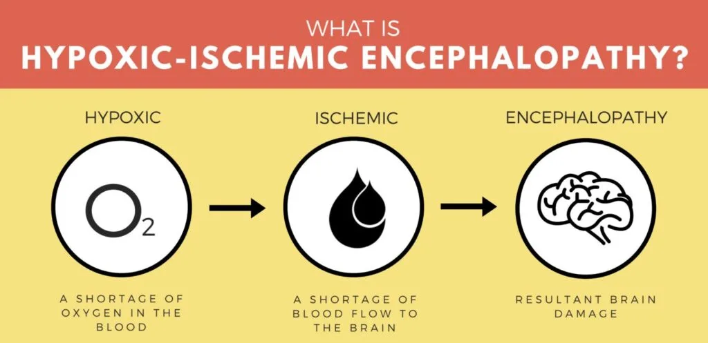
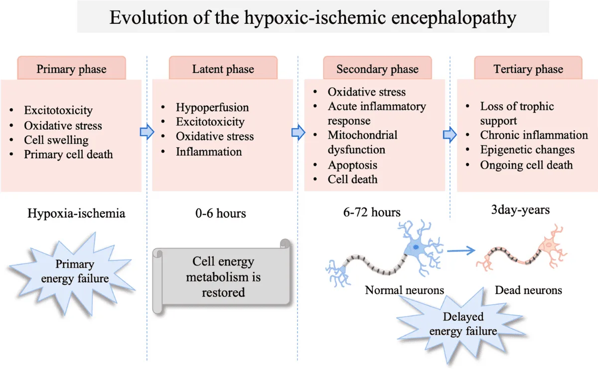
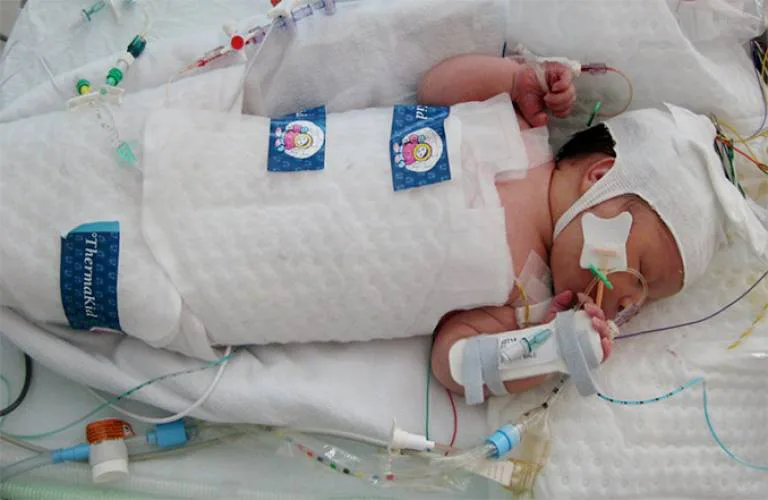
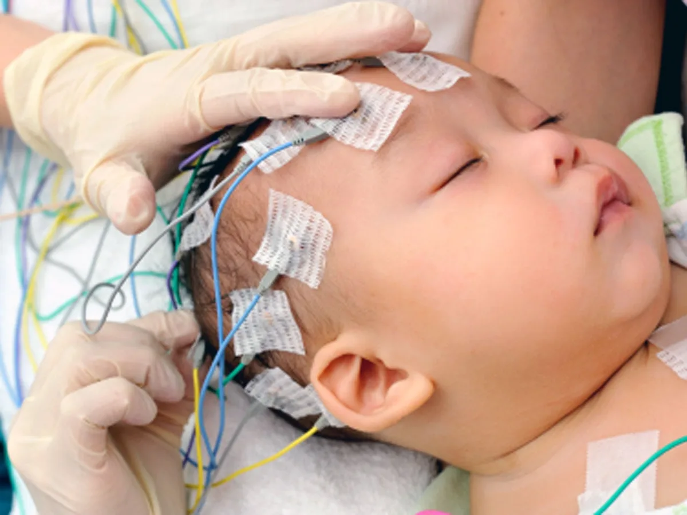
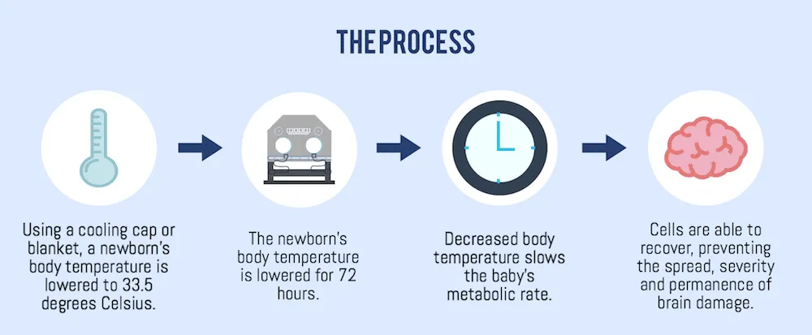

Expanded Nursing Uganda Explanation
Hypoxic Ischemic encephalopathy should be understood beyond a short definition. Link the concept to patient history, focused assessment, common risks, nursing priorities, documentation and evaluation of outcomes.
01 Overview
Hypoxic-Ischemic Encephalopathy (HIE) refers to a type of brain injury that occurs when the brain is deprived of adequate oxygen (hypoxia) and blood flow (ischemia) for a period of time. This deprivation leads to damage or destruction of brain cells.
- Hypoxia: A condition in which the body or a region of the body is deprived of adequate oxygen supply at the tissue level. In the context of HIE, this means the brain cells are not receiving enough oxygen.
- Ischemia: A restriction in blood supply to tissues, causing a shortage of oxygen and glucose needed for cellular metabolism. In HIE, this is a reduction or cessation of blood flow to the brain.
- Encephalopathy: Any diffuse disease of the brain that alters brain function or structure. In HIE, this refers to the abnormal neurological function resulting from the hypoxic-ischemic insult.
Therefore, HIE is essentially brain damage caused by a lack of oxygen and blood flow to the brain.
HIE is rarely caused by a single event but often results from an interplay of factors leading to inadequate oxygenation and perfusion of the fetal or neonatal brain. These factors can occur during the antenatal (before birth), intrapartum (during birth), or postnatal (after birth) periods.
These conditions can compromise placental function or fetal oxygenation, setting the stage for HIE.
- Maternal Conditions: Pre-eclampsia/Eclampsia: High blood pressure during pregnancy, often leading to reduced placental blood flow.
- Maternal Diabetes: Poorly controlled diabetes can affect placental function and fetal oxygenation.
- Maternal Hypertension (Chronic or Gestational): Reduced uteroplacental perfusion.
- Maternal Anemia: Reduced oxygen-carrying capacity in maternal blood.
- Maternal Cardiac or Pulmonary Disease: Compromised maternal oxygenation.
- Maternal Infections: Severe infections can lead to fetal inflammation and compromise.
- Substance Abuse: Maternal use of illicit drugs or severe smoking can reduce placental blood flow and fetal oxygenation.
- Uterine Rupture (prior to labor): Can cause acute and severe fetal distress.
- Placental Conditions: Placental Abruption: Premature detachment of the placenta from the uterine wall, leading to acute fetal hypoxia and bleeding.
- Placenta Previa: Placenta covers the cervix, which can lead to severe bleeding during pregnancy or labor.
- Placental Insufficiency: Chronic failure of the placenta to deliver adequate nutrients and oxygen to the fetus, often leading to intrauterine growth restriction (IUGR) and increased vulnerability to stress during labor.
- Cord Accidents (e.g., nuchal cord, cord prolapse): Can cause acute interruption of fetal blood flow, though these are more common intrapartum.
- Fetal Conditions: Severe Fetal Growth Restriction (FGR/IUGR): Often a sign of chronic placental insufficiency, making the fetus highly susceptible to hypoxic events.
- Fetal Anemia: Due to conditions like alloimmune hemolytic disease.
- Fetal Cardiac Anomalies: Structural heart defects that impair fetal circulation.
- Fetal Infections: Can lead to systemic inflammation and compromise.
- Multiple Gestation (e.g., twin-to-twin transfusion syndrome): Can lead to significant disparities in blood volume and oxygenation.
These are the most commonly identified causes of acute, severe HIE.
- Uterine Hyperstimulation/Tachysystole: Excessive uterine contractions, often due to induction agents (e.g., oxytocin), which reduce blood flow to the placenta between contractions.
- Cord Compression/Prolapse: Compression of the umbilical cord during contractions or its descent ahead of the fetus, severely reducing or completely interrupting fetal blood flow.
- Placental Abruption: While it can occur antenatally, severe abruption during labor is a major cause of acute fetal compromise.
- Uterine Rupture: Complete tear in the uterine wall, leading to severe hemorrhage and acute fetal distress.
- Prolonged Labor/Difficult Delivery: Extended periods of fetal stress, especially with inadequate oxygen reserves.
- Shoulder Dystocia: Difficulty delivering the baby's shoulder after the head, which can prolong delivery and compromise fetal oxygenation.
- Maternal Hypotension: Due to epidural anesthesia or other causes, leading to reduced placental perfusion.
These events occur immediately after birth or in the early neonatal period.
- Severe Cardiopulmonary Compromise: Severe Respiratory Distress Syndrome (RDS): Due to prematurity or lung pathology, leading to profound hypoxemia.
- Congenital Heart Disease: Critical defects that prevent adequate oxygen delivery to the body and brain.
- Persistent Pulmonary Hypertension of the Newborn (PPHN): High blood pressure in the lungs, shunting blood away from the lungs and preventing adequate oxygenation.
- Severe Meconium Aspiration Syndrome (MAS): Obstructs airways and impairs lung function.
- Sepsis/Shock: Systemic infection leading to circulatory collapse and reduced cerebral perfusion.
- Severe Anemia: Acute blood loss at or after birth.
- Central Nervous System (CNS) Hemorrhage: Severe intraventricular hemorrhage (IVH) in premature infants or other intracranial bleeding leading to shock and ischemia.
- Airway Obstruction: Due to congenital anomalies or trauma.
- Severe Hypoglycemia: Prolonged low blood sugar, which can lead to brain injury, especially when combined with reduced oxygen.
The brain injury following a hypoxic-ischemic insult is not a single event but rather an evolving process that occurs in phases. This understanding is important to therapeutic interventions.
- Oxygen and Glucose Deprivation: The initial hypoxic-ischemic event (e.g., placental abruption, severe cord compression) leads to a rapid cessation of oxygen and glucose delivery to brain cells.
- Failure of Oxidative Phosphorylation: Neurons rely heavily on aerobic metabolism (oxidative phosphorylation) in mitochondria to produce ATP (adenosine triphosphate), the primary energy currency of the cell. Without oxygen, this process fails.
- ATP Depletion: The rapid depletion of ATP leads to the failure of energy-dependent cellular processes, most notably the ion pumps (e.g., Na+/K+-ATPase).
- Cellular Swelling and Excitotoxicity: Failure of the Na+/K+-ATPase pump leads to an influx of sodium and water into the cells, causing cellular swelling (cytotoxic edema) .
- Depolarization of neurons leads to the release of excitatory neurotransmitters, primarily glutamate , into the synaptic cleft.
- Excessive glutamate overstimulates NMDA and AMPA receptors, causing a massive influx of calcium into the cells. This calcium overload is highly toxic, activating destructive enzymes (proteases, lipases, endonucleases).
- Anaerobic Metabolism and Lactic Acidosis: As aerobic metabolism fails, cells switch to anaerobic glycolysis to produce a small amount of ATP. This process generates lactic acid, leading to intracellular and extracellular acidosis , which further compromises cell function and integrity.
- Early Cell Death: If the insult is severe and prolonged, this phase can lead to immediate necrosis (cell death) of vulnerable cells.
Following the initial insult, there may be a brief period of apparent recovery of cellular energy metabolism, lasting for minutes to a few hours. During this phase:
- Cerebral blood flow may partially normalize.
- Some metabolic functions might recover slightly.
- However, the groundwork for secondary energy failure is being laid.
This is the most critical phase for therapeutic intervention, occurring 6-24 hours after the initial insult and potentially lasting for days. It's often more damaging than the primary insult itself.
- Reperfusion and Oxygen Radical Formation: When blood flow (and thus oxygen) is restored to the injured brain, paradoxically, it can exacerbate the injury. The reintroduction of oxygen to damaged mitochondria leads to the excessive production of highly reactive reactive oxygen species (ROS) , also known as free radicals.
- Oxidative Stress: These free radicals cause widespread damage to cellular components: Lipid peroxidation: Damage to cell membranes.
- Protein oxidation: Damage to enzymes and structural proteins.
- DNA damage: Leading to cell death.
- Inflammation: The damaged brain tissue releases inflammatory mediators (cytokines, chemokines), leading to: Leukocyte infiltration: Immune cells enter the brain, contributing to inflammation and further damage.
- Microglial activation: Resident immune cells of the brain become activated, also releasing inflammatory and cytotoxic substances.
- Breakdown of the Blood-Brain Barrier (BBB): Inflammation damages the BBB, leading to vasogenic edema (fluid leaking from blood vessels into brain tissue), further increasing intracranial pressure and exacerbating injury.
- Apoptosis (Programmed Cell Death): Unlike the rapid necrosis of the primary insult, secondary injury often involves a more delayed, programmed form of cell death called apoptosis. This can occur over hours to days to weeks after the initial event. Neurons and oligodendrocytes (cells that produce myelin) are particularly vulnerable to apoptotic pathways.
- Mitochondrial Dysfunction: Mitochondria, already compromised during the primary insult, become irreversibly damaged during reperfusion, further impairing energy production and driving apoptotic pathways.
This phase can last for weeks, months, or even years, involving:
- Gliosis: Proliferation of glial cells (astrocytes) to form scar tissue.
- Cyst formation: Cavities in the brain where tissue has been lost.
- Myelination defects: Damage to oligodendrocytes can lead to impaired myelin formation, affecting nerve conduction.
- Ongoing neuronal loss: Slow, continuous loss of neurons.
- Brain Remodeling: The brain attempts to repair and adapt, but often with significant functional deficits.
Understanding these phases is important for treatment. Therapeutic hypothermia (cooling the infant's core body temperature to 33-34°C for 72 hours) is highly effective because it specifically targets and mitigates the destructive processes of the secondary energy failure phase. Cooling reduces:
- Metabolic rate and oxygen demand.
- Excitotoxicity.
- Free radical production.
- Inflammation.
- Apoptosis.
By slowing down these destructive processes, hypothermia can limit the extent of brain damage and improve neurological outcomes.
The clinical manifestations of HIE are diverse, reflecting the extent and location of brain damage. They can range from subtle signs to severe neurological depression. The severity is categorized using a grading system, which also helps predict prognosis.
Clinical signs of HIE usually appear within the first hours to days after birth and can involve various neurological and systemic systems.
- Neurological Signs: These are the most prominent and critical indicators. Level of Consciousness: Lethargy/Hypotonia: Decreased activity, poor muscle tone.
- Stupor: Unresponsive except to painful stimuli.
- Coma: Unresponsive to all stimuli.
- Reflexes: Primitive Reflexes: Weak or absent Moro, suck, grasp reflexes.
- Pupillary Light Reflex: Sluggish or absent.
- Oculomotor Responses: Abnormal eye movements (e.g., roving, nystagmus) or fixed pupils.
- Muscle Tone: Hypotonia (Flaccidity): Decreased muscle tone, "floppy" baby.
- Hypertonia (Spasticity): Increased muscle tone (may develop later).
- Seizures: One of the most common and concerning signs. Can be subtle (e.g., bicycling movements, chewing motions, eye deviation) or generalized. Occur in 50-70% of moderate to severe HIE cases.
- Abnormal Posturing: Decorticate (arms flexed, legs extended) or decerebrate (arms and legs extended) posturing in severe cases.
- Apnea/Irregular Respirations: Due to central respiratory drive depression.
- Irritability/Jitteriness: In milder cases or early stages.
- Systemic Manifestations (Due to involvement of other organs from systemic hypoxia-ischemia): Cardiovascular: Hypotension, bradycardia, poor perfusion (cool extremities, prolonged capillary refill).
- Respiratory: Apnea, irregular breathing, need for ventilatory support.
- Renal: Oliguria/anuria, elevated creatinine, acute kidney injury.
- Gastrointestinal: Poor feeding, abdominal distension, necrotizing enterocolitis (rare but possible).
- Hematological: Disseminated intravascular coagulation (DIC), thrombocytopenia.
- Metabolic: Hypoglycemia, metabolic acidosis, hypocalcemia.
The most widely used clinical staging system for HIE is the Sarnat & Sarnat Staging , developed in 1976. This system classifies HIE into three grades based on neurological signs, usually assessed within the first 24-72 hours of life. This grading helps predict prognosis and guides treatment decisions, particularly for therapeutic hypothermia.
- Feature Stage 1 (Mild HIE) Stage 2 (Moderate HIE) Stage 3 (Severe HIE)
- Level of Consciousness Hyperalert, irritable Lethargic, stuporous Comatose, unresponsive
- Muscle Tone Normal to increased (mild hypertonia) Mild to moderate hypotonia Flaccid, severe hypotonia
- Posture Normal, mild flexion Strong distal flexion, weak proximal Decerebrate, intermittent flexion
- Pupils Miosis (constricted) Miosis or normal Mydriasis (dilated), fixed
- Moro Reflex Exaggerated, incomplete Weak or absent Absent
- Suck Reflex Weak, strong Weak or absent Absent
- Grasp Reflex Exaggerated Weak or absent Absent
- Seizures Absent Present, frequent Present, intractable (difficult to control)
- Respirations Normal, irregular Periodic breathing, apnea Apnea, requiring ventilation
- Duration of Symptoms Usually < 24 hours Hours to days, can evolve Days to weeks, often fatal
- Prognosis Excellent, good neurological outcome Variable, significant risk of neurological sequelae Poor, high mortality, severe neurological deficits
- Dynamic Nature: The clinical picture can evolve, so repeated assessments are necessary. An infant might progress from Stage 1 to Stage 2.
- Therapeutic Window: Infants with moderate (Stage 2) to severe (Stage 3) HIE are candidates for therapeutic hypothermia. Mild HIE (Stage 1) is generally not treated with hypothermia.
- Prognostic Value: This staging is a powerful predictor of long-term neurodevelopmental outcomes.
Diagnosing HIE involves a combination of clinical assessment, laboratory tests, and neuroimaging studies. The goal is to confirm the diagnosis, assess severity, and rule out other conditions that may mimic HIE.
The American College of Obstetricians and Gynecologists (ACOG) and the American Academy of Pediatrics (AAP) have established criteria to define an acute intrapartum event sufficient to cause HIE. For a diagnosis of acute intrapartum HIE , all four of the following must be met:
- Evidence of a metabolic acidosis in intrapartum fetal blood or umbilical artery blood (pH < 7.0 and base deficit ≥ 12 mmol/L). This indicates severe oxygen deprivation during labor.
- Early onset of moderate or severe encephalopathy in infants ≥ 34 weeks of gestation. This is assessed clinically using criteria like the Sarnat staging.
- Cerebral Palsy of the spastic quadriplegic or dyskinetic type. (This criterion applies retrospectively for establishing a causal link later in life, but the other three are for initial diagnosis).
- Exclusion of other identifiable etiologies (e.g., trauma, coagulopathy, infection, genetic conditions) that could explain the neurological signs.
While these criteria are strict for defining an acute intrapartum event , HIE can also result from antenatal or postnatal causes, and the full clinical picture is always considered.
- Detailed History: Maternal History: Any risk factors during pregnancy (e.g., pre-eclampsia, diabetes, infection, drug use).
- Labor and Delivery History: Duration of labor, fetal heart rate patterns (e.g., prolonged decelerations, bradycardia), meconium-stained amniotic fluid, difficulties during delivery (e.g., shoulder dystocia, cord prolapse), Apgar scores.
- Postnatal Course: Onset and progression of neurological symptoms (lethargy, seizures, abnormal tone), respiratory status, feeding difficulties.
- Neurological Examination: This is the cornerstone of diagnosis and severity assessment (Sarnat staging, as discussed in Objective 4). Repeated neurological exams are crucial as the infant's condition can evolve. Assess level of consciousness, muscle tone, primitive reflexes, pupillary responses, and presence of seizures.
- Umbilical Cord Blood Gases: Essential for identifying metabolic acidosis (low pH, high base deficit), which is a key indicator of acute intrapartum hypoxic-ischemic insult.
- Blood Glucose: To identify and manage hypoglycemia, which can mimic or exacerbate brain injury.
- Electrolytes (Na, K, Ca, Mg): To detect imbalances that can affect neurological function or result from HIE.
- Complete Blood Count (CBC) and Coagulation Profile: To rule out infection, anemia, or coagulopathy.
- Liver and Renal Function Tests: To assess multi-organ involvement, as systemic hypoxia-ischemia can affect these organs.
- Lactate Levels: Elevated lactate indicates anaerobic metabolism and tissue hypoxia.
- Creatine Kinase BB (CK-BB) Isoenzyme: A marker of brain injury, though not specific to HIE.
- Infection Work-up: Blood cultures, CSF analysis, CRP (C-reactive protein) if sepsis is suspected, as infection can present similarly or coexist.
- Toxicology Screen: If maternal substance abuse is suspected.
Neuroimaging provides crucial information about the extent, pattern, and timing of brain injury.
- Magnetic Resonance Imaging (MRI) of the Brain (with Diffusion-Weighted Imaging - DWI): Gold Standard: MRI is the most sensitive and specific imaging modality for diagnosing HIE and predicting long-term neurological outcome.
- Timing: Optimal imaging window for acute injury is typically between 3-7 days of life . DWI can detect early cytotoxic edema (within 24-48 hours).
- Findings: Patterns of injury on MRI (e.g., basal ganglia/thalamic injury, watershed cortical injury) are highly predictive of the type and severity of neurological deficits.
- Cranial Ultrasound (CUS): Initial Screening/Monitoring: A non-invasive, readily available tool, especially useful in the acute phase for detecting severe injury like hemorrhage or hydrocephalus.
- Limitations: Less sensitive than MRI for detecting subtle parenchymal changes characteristic of HIE. Can show increased echogenicity (whiteness) in periventricular white matter or basal ganglia during the acute phase.
- Computed Tomography (CT) Scan of the Brain: Limited Role: Less sensitive than MRI for detecting early HIE changes and involves radiation exposure.
- Utility: Useful in acute emergencies to rule out intracranial hemorrhage or severe edema when MRI is not immediately available or contraindicated.
- Amplitude-Integrated Electroencephalography (aEEG): Continuous Monitoring: Provides a simplified, continuous recording of brain electrical activity at the bedside.
- Detects Seizures: Excellent for detecting subclinical (non-convulsive) seizures, which are common in HIE and often go unnoticed clinically.
- Assesses Brain Function: Helps assess the background brain activity, which correlates with the severity of HIE and predicts outcome. A severely depressed or burst-suppression pattern indicates severe encephalopathy.
- Guides Treatment: Crucial for monitoring response to anti-seizure medications and during therapeutic hypothermia.
- Standard Electroencephalography (EEG): Detailed Analysis: Provides a more detailed assessment of brain electrical activity than aEEG, particularly useful for characterizing seizure types and localization.
- Intermittent Monitoring: Typically performed intermittently rather than continuously.
This is a pediatrics emergency.
The medical management of HIE is multidisciplinary and aims to provide supportive care, prevent further brain injury, treat complications, and most importantly, implement neuroprotective strategies. The cornerstone of acute management for moderate to severe HIE in term and late preterm infants is therapeutic hypothermia .
These measures are initiated immediately upon suspicion of HIE and continue throughout the acute phase. The goal is to maintain optimal physiological conditions for the injured brain.
- Respiratory Support: Secure Airway: Ensure adequate oxygenation and ventilation. Many infants with HIE require endotracheal intubation and mechanical ventilation due to central respiratory depression, poor gag reflex, or apneic episodes.
- Oxygenation: Maintain appropriate oxygen saturation (typically 90-95%) to avoid both hypoxia and hyperoxia, which can worsen reperfusion injury.
- CO2 Management: Maintain normocapnia (normal CO2 levels) as both hypocapnia (vasoconstriction, reduced cerebral blood flow) and hypercapnia (vasodilation, increased intracranial pressure) can be detrimental.
- Cardiovascular Support: Maintain Blood Pressure: Prevent hypotension (which reduces cerebral perfusion) and severe hypertension. Vasopressors (e.g., dopamine, dobutamine) may be used.
- Fluid Management: Administer intravenous fluids cautiously to maintain adequate hydration without causing fluid overload, which could worsen cerebral edema.
- Metabolic and Electrolyte Homeostasis: Glucose Control: Monitor blood glucose levels closely and manage hypoglycemia (common) or hyperglycemia (which can worsen brain injury).
- Electrolyte Balance: Correct imbalances in sodium, potassium, calcium, and magnesium.
- Acid-Base Balance: Correct metabolic acidosis.
- Temperature Regulation (Prior to and During Cooling): Avoid Hyperthermia: Even mild hyperthermia (fever) can significantly worsen brain injury. Actively prevent and treat fever.
- Controlled Cooling: If therapeutic hypothermia is indicated, cooling should be controlled and gradual, not rapid, to avoid complications.
- Nutrition: Early Trophic Feeds: If the gut is viable, minimal enteral feeding can support gut integrity.
- Parenteral Nutrition: If oral/enteral feeding is not possible, provide total parenteral nutrition (TPN) to meet caloric and nutritional needs.
- Infection Control: Antibiotics: Initiate empiric antibiotics if infection is suspected, as sepsis can mimic or coexist with HIE and worsen outcomes.
- Monitor for Sepsis: Closely monitor for signs of infection.
- Fluid Management: Administer intravenous fluids cautiously to maintain adequate hydration without causing fluid overload, which could worsen cerebral edema. Initial fluid restriction (e.g., 60-80 ml/kg/day) is common, especially if SIADH is suspected or confirmed, to prevent cerebral edema.
- Hematological Management: Avoid Polycythemia: HIE infants are at risk for polycythemia (hematocrit > 65-70%). High hematocrit increases blood viscosity, which can impair cerebral blood flow and oxygen delivery. If the hematocrit remains elevated despite adequate hydration, a partial exchange transfusion may be performed to bring the level down to around 55% to improve cerebral perfusion.
Therapeutic hypothermia (also known as targeted temperature management or neuroprotective cooling) is the only treatment proven to improve survival and neurodevelopmental outcomes in infants with moderate to severe HIE.
- Mechanism of Action: cooling works by reducing the damaging processes of secondary energy failure. It decreases: Cerebral metabolic rate and oxygen demand.
- Excitotoxicity (glutamate release).
- Inflammation.
- Free radical production.
- Apoptosis.
- Blood-brain barrier disruption.
- Candidates for Hypothermia: Gestational Age: Term (≥ 36 weeks) and late preterm (34-35 weeks 6 days) infants.
- Evidence of Perinatal Asphyxia: pH < 7.0 or base deficit ≥ 12 mmol/L on umbilical cord blood or first postnatal blood gas OR an Apgar score ≤ 5 at 10 minutes OR continued need for resuscitation at 10 minutes.
- Evidence of Moderate to Severe Encephalopathy: Sarnat Stage 2 or 3 (lethargy, stupor, coma, hypotonia, abnormal reflexes, seizures).
- Onset within Therapeutic Window: Cooling must be initiated within 6 hours of birth or the suspected hypoxic-ischemic event. This narrow window is critical for effectiveness.
- Procedure: Target Temperature: Core body temperature is maintained at 33.0-34.0°C .
- Duration: Typically for 72 hours .
- Methods: Whole-Body Cooling: Using a cooling blanket/mattress that circulates water.
- Selective Head Cooling: Using a cap that circulates cooled water around the infant's head, while the body is maintained at a slightly higher temperature or ambient.
- Rewarming: After 72 hours, the infant is slowly rewarmed by increasing temperature by 0.5°C per hour over 6-12 hours. Rapid rewarming can be dangerous.
- Monitoring: Continuous core temperature monitoring (rectal or esophageal probe), heart rate, blood pressure, oxygen saturation, aEEG, and frequent clinical assessment.
- Potential Complications of Hypothermia: Bradycardia: Common but usually well-tolerated.
- Hypotension: Requires careful monitoring and management.
- Arrhythmias: Less common but serious.
- Coagulopathy/Thrombocytopenia: Increased risk of bleeding.
- Subcutaneous Fat Necrosis: A benign skin condition.
- Electrolyte Disturbances: Hypoglycemia, hypokalemia.
- Increased Risk of Infection: Though debated, careful monitoring is needed.
- Seizure Management: Control of seizures: HIE seizures are often difficult to control, reflecting the severity of brain injury. Aggressive and timely management is crucial.
- Anticonvulsants: Phenobarbital: Often the first-line drug. Typical loading dose 15-20 mg/kg IV, followed by a maintenance dose of 3-5 mg/kg/day IV.
- Phenytoin: Can be used if phenobarbital is ineffective. Loading dose 15-20 mg/kg IV, followed by a maintenance dose of 5 mg/kg/day IV.
- Midazolam: A benzodiazepine, often used for status epilepticus or refractory seizures, typically as a continuous infusion after a bolus (e.g., 0.1-0.3 mg/kg IV bolus, then infusion).
- Newer agents: Like Levetiracetam and Topiramate are increasingly used in neonates, sometimes as first-line or add-on therapies, due to potentially better side effect profiles or efficacy in certain situations.
- aEEG Monitoring: Essential for identifying and treating both clinical and subclinical seizures.
- Correction of Metabolic Derangements: Address hypoglycemia, hypocalcemia, or electrolyte imbalances that can trigger seizures.
- Cerebral Edema and Intracranial Pressure (ICP) Management: Head Elevation: Mild head elevation (30 degrees).
- Fluid Restriction: Careful fluid management.
- Osmotic Diuretics: Mannitol or hypertonic saline may be considered in severe cases of cerebral edema, though their use in neonates with HIE is debated and not routinely recommended.
- Avoidance of Pain and Stimulation: Minimize noxious stimuli.
While therapeutic hypothermia is the only proven therapy, research continues into other agents that could further enhance neuroprotection or extend the therapeutic window. These include:
- Xenon gas
- Erythropoietin (EPO)
- Melatonin
- Topiramate
- Stem cell therapies
Currently, none of these are standard clinical practice for HIE outside of research protocols.
The long-term outcomes for infants who survive HIE are highly variable and depend primarily on the severity of the initial insult, the effectiveness of neuroprotective interventions (like therapeutic hypothermia), and the presence of any concurrent morbidities. The complications can affect nearly every aspect of neurodevelopmental function and often necessitate multidisciplinary follow-up.
- Cerebral Palsy (CP): Most Common Motor Disability: HIE is a leading cause of cerebral palsy, particularly spastic quadriplegic or dyskinetic types. CP is a group of permanent movement disorders that appear in early childhood.
- Severity: Can range from mild gait disturbances to severe motor impairment requiring total care.
- Types: Spastic (stiff muscles), dyskinetic (uncontrolled movements), ataxic (poor balance and coordination), or mixed.
- Developmental Delays: Global Developmental Delay: Delays across multiple domains (motor, cognitive, speech, social).
- Specific Delays: Can affect fine motor skills, gross motor skills, speech and language development, and personal-social development.
- Intellectual Disability (Cognitive Impairment): Range: From mild learning difficulties to severe intellectual disability, affecting problem-solving, reasoning, and adaptive functioning.
- Impact on Education: Many children require special education services.
- Epilepsy/Seizure Disorder: Increased Risk: Children with a history of HIE, especially moderate to severe, have a significantly higher risk of developing recurrent unprovoked seizures (epilepsy).
- Intractability: Seizures can be difficult to control with medication.
- Sensory Impairments: Visual Impairment: Cortical Visual Impairment (CVI): Damage to the visual pathways in the brain, leading to impaired visual processing even with healthy eyes. This is very common after HIE.
02 Nursing Uganda Clinical Lens
Use Hypoxic Ischemic encephalopathy as a practical nursing topic, not only a memorized definition. Prioritize airway, breathing, circulation, pain, asepsis, wound healing and early complication detection.
- What to understand first: define hypoxic ischemic encephalopathy, identify the normal or expected pattern, then explain what changes when the patient is unwell.
- Why it matters in care: the nurse must recognize risk early, explain findings clearly, document accurately and know when to escalate.
- How to revise it: connect each point to assessment, nursing diagnosis or care problem, intervention, rationale and evaluation.
03 Assessment Guide
- Vital signs, pain, bleeding, perfusion, level of consciousness and injury pattern.
- Wound appearance, drainage, odour, swelling, temperature and surrounding skin.
- Fluid balance, mobility, nutrition, surgical site risk and ordered investigations.
04 Nursing Priorities, Rationales and Outcomes
- Stabilize urgent problems first, then prepare for investigations or theatre care.
- Maintain aseptic technique, pain control, wound care and documentation.
- Prevent shock, infection, pressure injury, deep vein thrombosis and delayed healing.
The rationale for these priorities is patient safety: nursing actions should prevent deterioration, reduce discomfort, support recovery and create clear evidence for the next caregiver.
- Expected outcome: The patient remains stable, wound healing progresses, pain is controlled and complications are recognized early.
05 Patient Teaching and Revision Check
- Explain hypoxic ischemic encephalopathy in simple language the patient or caregiver can repeat back.
- Teach warning signs, medicine or follow-up instructions, hygiene or lifestyle points where relevant.
- For exams, prepare a short answer using: definition, causes or risk factors, signs, assessment, management, complications and prevention.
- For ward practice, document baseline findings, actions taken, patient response and the plan for review.
Illustrations and Diagrams (14)







6 more diagrams available, open the lesson for full illustrations.
Related Video Lectures
Watch nursing lecture videos on YouTube for this topic. Opens in a new tab.
Watch on YouTubeExternal link: YouTube may use its own cookies and terms. Nursing Uganda is not affiliated with YouTube.